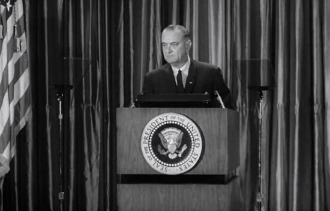
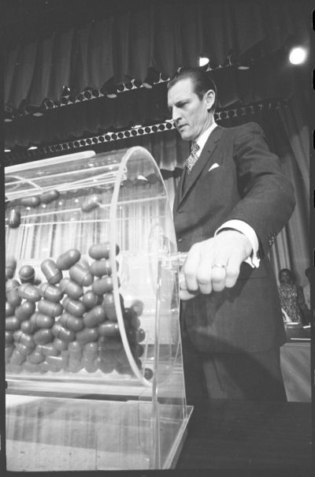
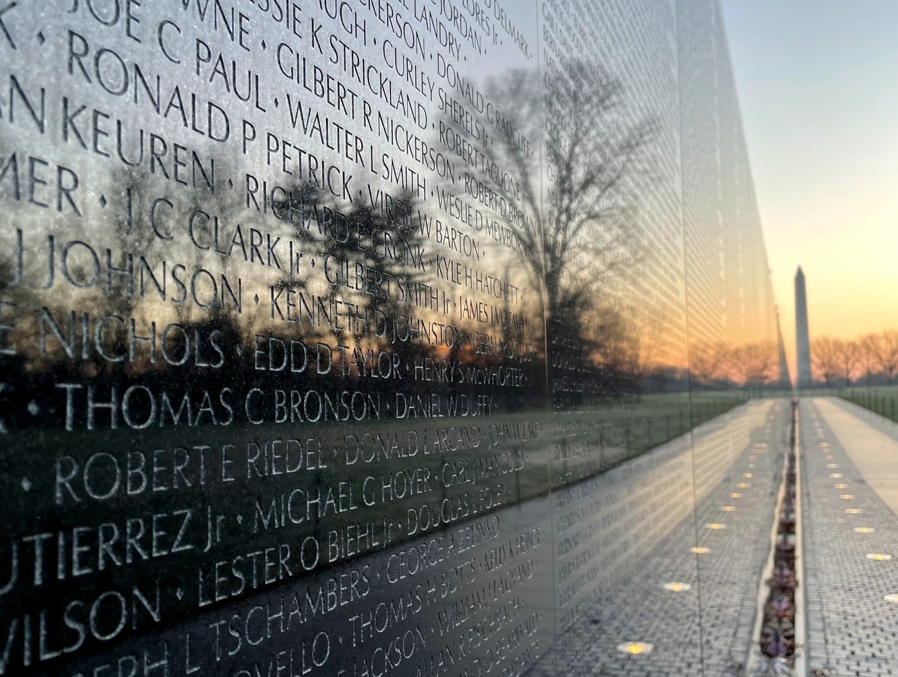

ESSENTIAL QUESTIONWhy did the United States fight wars in countries most Americans could not find on a map?
In October 1962, a U.S. spy plane flew over Cuba and took photographs that made the president's room go silent. The pictures showed Soviet nuclear missiles being built only about 90 miles from Florida. President John F. KennedyU.S. president during the Cuban Missile Crisis. now had to choose between doing nothing, attacking Cuba, or risking a nuclear war. A small island suddenly felt like the front line of the entire world.
In October 1962, a U.S. spy plane took pictures over Cuba. The pictures showed Soviet nuclear missiles only about 90 miles from Florida. President John F. Kennedy had to make a dangerous choice. A small island suddenly felt like the front line of the whole world.
That same Cold War fear also shaped Vietnam. U.S. leaders believed that if one country became communist, nearby countries might fall next. This idea pulled the United States deeper into wars far from home. The result was a long conflict that changed American politics, trust, and lives.
Cold War fear also shaped Vietnam. U.S. leaders thought one communist country could lead to more. That idea pulled the United States into wars far away. The result changed American politics and many families.
TIMELINE
FROM CRISIS TO ESCALATION
1954
France loses control of Vietnam. Vietnam is divided into communist North Vietnam and U.S.-backed South Vietnam.
1959
Fidel Castro takes power in Cuba and later moves closer to the Soviet Union.
1961
The Bay of Pigs invasion fails, embarrassing the United States and strengthening Castro's ties with Moscow.
1962
The Cuban Missile Crisis brings the United States and Soviet Union close to nuclear war.
1964-1965
The Gulf of Tonkin Resolution helps President Johnson expand the Vietnam War.
1975
Saigon falls to North Vietnam, ending the war and leaving Americans divided over what the war had meant.
CHAPTER ONE
CUBA: FAILURE, FEAR, AND THIRTEEN DAYS
Fidel Castro's revolution brought a communist-friendly government to Cuba, 1959. Wikimedia Commons.
In 1959, Fidel CastroCuban leader who took power in 1959. took power in Cuba. U.S. leaders feared that Cuba would become a Soviet ally so close to Florida. In April 1961, Kennedy approved a CIA plan called the Bay of Pigs invasionFailed U.S.-backed invasion of Cuba in 1961.. Cuban exiles trained by the CIA landed in Cuba, hoping to start an uprising against Castro.
In 1959, Fidel Castro took power in Cuba. U.S. leaders worried that Cuba would become close to the Soviet Union. In April 1961, Kennedy approved the Bay of Pigs invasion. Cuban exiles trained by the CIA landed in Cuba to fight Castro.
The invasion failed quickly. The expected uprising never happened. Castro's forces captured or killed the invaders. The United States looked weak, and Kennedy looked inexperienced. The failure pushed Castro closer to the Soviet Union and made both sides more suspicious.
The invasion failed fast. People in Cuba did not rise up against Castro. Castro's forces captured or killed the invaders. The United States looked weak. Castro moved closer to the Soviet Union.
U-2 spy plane photograph of Soviet missile sites in Cuba, October 1962. Wikimedia Commons / National Archives.
In October 1962, the U.S. discovered Soviet nuclear missiles in Cuba. This began the Cuban Missile CrisisThirteen-day nuclear standoff over missiles in Cuba.. Kennedy's advisers argued over what to do. Some wanted air strikes. Kennedy chose a naval blockadeUsing ships to stop supplies from entering. around Cuba and demanded that Soviet leader Nikita KhrushchevSoviet leader during the Cuban Missile Crisis. remove the missiles.
In October 1962, the U.S. found Soviet nuclear missiles in Cuba. This began the Cuban Missile Crisis. Some advisers wanted to bomb Cuba. Kennedy chose a naval blockade. He demanded that Nikita Khrushchev remove the missiles.
For thirteen days, the world came closer to nuclear war than ever before. Soviet ships sailed toward the blockade. U.S. forces prepared for war. Finally, Khrushchev agreed to remove the missiles from Cuba. In secret, Kennedy also agreed to remove U.S. missiles from Turkey later. Both leaders stepped back, and the world survived.
For thirteen days, the world came close to nuclear war. Soviet ships moved toward the blockade. U.S. forces got ready. Khrushchev finally agreed to remove the missiles. Kennedy secretly agreed to remove U.S. missiles from Turkey later.
DID YOU KNOW
Vasili Arkhipov or Soviet submarine B-59, Cuban Missile Crisis.
One Soviet officer may have helped save the world. During the crisis, a Soviet submarine was trapped underwater while U.S. ships dropped practice depth charges. Two officers wanted to launch a nuclear torpedo, but Vasili Arkhipov refused to approve it.
FAST FACTS
HOW COLD WAR ESCALATION REACHED CUBA AND VIETNAM
90miles separated Cuba from Florida, making Soviet missiles there feel like a direct threat to the United States
13days the Cuban Missile Crisis lasted as U.S. and Soviet leaders tried to avoid nuclear war
58K+U.S. service members died in the Vietnam War, showing the human cost of containment
1975the year Saigon fell and the long U.S. effort to defend South Vietnam ended in defeat
CHAPTER TWO
VIETNAM: FROM ADVISERS TO WAR
Vietnam was divided into communist North Vietnam and U.S.-backed South Vietnam. Wikimedia Commons.
Vietnam had been controlled by France as a colony. After World War II, Vietnamese leader Ho Chi MinhCommunist leader of North Vietnam. fought for independence. France lost in 1954, and Vietnam was divided into communist North Vietnam and U.S.-backed South Vietnam. The conflict became part of the larger Cold War because each side had powerful allies.
Vietnam had been a French colony. After World War II, Ho Chi Minh fought for independence. France lost in 1954. Vietnam was divided into communist North Vietnam and U.S.-backed South Vietnam. The conflict became part of the Cold War.
U.S. leaders used domino theoryThe fear that one communist country could make others fall. to explain why Vietnam mattered. They believed that if Vietnam became communist, other countries in Southeast Asia might follow. This belief connected Vietnam to containmentStopping communism from spreading farther., the Cold War policy of stopping communism from spreading. A faraway country began to seem important to American safety.
U.S. leaders believed in domino theory. They thought if Vietnam became communist, nearby countries might follow. This connected Vietnam to containment. A faraway country began to seem important to U.S. safety.
President Eisenhower sent military advisers. Kennedy sent more. Then President Lyndon Johnson used the Gulf of Tonkin Resolution1964 law that let Johnson expand the Vietnam War. to greatly expand the war. Congress gave Johnson broad power after reports that North Vietnamese boats attacked U.S. ships. Soon, hundreds of thousands of American troops were fighting in Vietnam.
President Eisenhower sent advisers. Kennedy sent more. President Johnson used the Gulf of Tonkin Resolution to expand the war. Congress gave him broad power. Soon, hundreds of thousands of U.S. troops were in Vietnam.
U.S. soldiers in Vietnam, mid-1960s. National Archives / Wikimedia Commons.CHAPTER THREE
THE WAR COMES HOME
The Vietnam War affected families across the United States because of the draftA system that forces people into military service.. Young men could be ordered to serve. College students often had deferments, which delayed service. This meant poorer men and men without college options were more likely to fight. The question of who had to serve made the war feel unfair to many Americans.
The Vietnam War reached many families because of the draft. Young men could be forced to serve. College students could often delay service. Poorer men were more likely to be sent. Many Americans thought this was unfair.
Vietnam draft lottery, 1969. Birth dates were drawn to decide who faced the highest chance of being drafted. Wikimedia Commons.
Television also changed how Americans saw war. News cameras showed fighting, wounded soldiers, burning villages, and body bags. The government said progress was being made, but many Americans saw a war that looked endless. Trust began to break.
Television changed the war. People saw fighting, wounded soldiers, burning villages, and body bags on the news. The government said the war was going well. Many Americans did not believe it.
In 1968, U.S. soldiers killed hundreds of Vietnamese civilians in the My Lai massacreU.S. killing of Vietnamese civilians in 1968.. The public learned about it later. My Lai showed that the war could damage not only bodies, but also moral judgment. It forced Americans to ask what the war was doing to the people fighting it.
In 1968, U.S. soldiers killed hundreds of civilians in the My Lai massacre. Americans learned about it later. My Lai showed how the war hurt civilians and soldiers' moral choices.
The antiwar movementPeople organizing to oppose a war. grew on college campuses and in cities. Students marched, burned draft cards, and demanded that the war end. After National Guard troops killed four students at Kent State University in 1970, protest spread even more. The war overseas had become a crisis at home.
The antiwar movement grew. Students marched and protested the draft. In 1970, National Guard troops killed four students at Kent State. The war far away had become a crisis at home.
Antiwar protest against the Vietnam War, late 1960s. Wikimedia Commons / Library of Congress.
ART SPOTLIGHTAnd babies? — Art Workers Coalition, 1969. The poster used a My Lai photograph by Ronald Haeberle and added words from a military interview.
This poster was so disturbing that a major museum first refused to distribute it. Artists raised money and printed it anyway. It became one of the most famous antiwar images because it refused to let viewers look away from what civilians had suffered.
CHAPTER FOUR
ENDING ONE WAR, WIDENING ANOTHER
President Richard Nixon promised to end the Vietnam War through VietnamizationNixon's plan to shift fighting to South Vietnamese troops.. This meant training South Vietnamese forces to fight while U.S. troops slowly came home. But Nixon also expanded the war in secret by bombing Cambodia, where North Vietnamese forces used supply routes. Ending a war became tangled with widening it.
President Nixon promised to end the war through Vietnamization. That meant South Vietnamese troops would fight more while U.S. troops came home. But Nixon also secretly bombed Cambodia. Ending the war became tied to widening it.
The Vietnam War spread into Cambodia and Laos through bombing and supply routes. Wikimedia Commons.
In 1975, North Vietnamese forces captured Saigon, the capital of South Vietnam. The fall of SaigonThe 1975 collapse of South Vietnam. ended the war. Images of helicopters lifting people from rooftops became a symbol of American defeat and chaos. For many Americans, the end of the war raised a painful question: what had all the sacrifice been for?
In 1975, North Vietnam captured Saigon. The fall of Saigon ended the war. Pictures of helicopters leaving rooftops became a symbol of defeat and chaos. Many Americans wondered what the sacrifice had been for.
Helicopter evacuation during the fall of Saigon, April 1975. Wikimedia Commons.
Cold War policy did not end with Vietnam. Nixon also tried détenteEasing tension between rival countries., which means easing tension. He opened relations with China and signed arms talks with the Soviet Union. Later, President Reagan took a harder line and supported proxy warA war where big powers support other fighters. efforts in Latin America, where the U.S. backed anti-communist forces.
Cold War policy did not end with Vietnam. Nixon tried détente, which means lowering tension. He opened relations with China. Later, Reagan supported proxy wars in Latin America against communism.
The Iran-Contra affairA secret Reagan-era plan involving weapons and rebel funding. showed how far officials might go in the name of fighting communism. Some officials secretly sold weapons to Iran and used money to support anti-communist rebels in Nicaragua, even though Congress had limited that support. Once again, Cold War fear pushed leaders to work around the normal rules.
The Iran-Contra affair showed how far officials went to fight communism. Some secretly sold weapons to Iran. They used money to support rebels in Nicaragua. Congress had tried to limit that support.
PRIMARY SOURCE MOMENT
WHY JOHNSON SAID VIETNAM MATTERED

President Lyndon B. Johnson explained why he believed the United States had to fight in Vietnam, 1965. Wikimedia Commons / LBJ Library.
PRIMARY SOURCE
“Why are we in South Viet-Nam? We are there because we have a promise to keep. Since 1954 every American President has offered support to the people of South Viet-Nam. We have helped to build, and we have helped to defend. Thus, over many years, we have made a national pledge to help South Viet-Nam defend its independence.”
President Lyndon B. Johnson, “Peace Without Conquest,” April 7, 1965.
Johnson framed Vietnam as a promise, a defense of independence, and part of America's Cold War responsibility. His words help answer the essential question because they show how U.S. leaders made a faraway country sound connected to American credibility and safety.
This source does not prove that Johnson was right. It shows how he explained the war to Americans. He argued that the United States had made promises and had to defend South Vietnam's independence. Students can use the excerpt as evidence of how Cold War leaders justified fighting in faraway places.
This source does not prove Johnson was right. It shows how he explained the war. He said the United States had made a promise. He said America had to defend South Vietnam's independence. This helps explain why leaders sent Americans to fight far away.
THEN AND NOW
COLD WAR ESCALATION TURNED FARAWAY PLACES INTO TESTS OF AMERICAN POWER.
1969

During the Vietnam draft lottery, birth dates helped decide who faced the highest chance of being sent to war.
NOW

Visitors at the Vietnam Veterans Memorial continue to confront the human cost of the war.
THEN
During the Vietnam War, Cold War policy reached into ordinary American homes. A young man's birthday could affect whether he might be drafted and sent across the Pacific. The war showed how decisions made in Washington could reshape families far from the battlefield.
NOW
Today, the Vietnam Veterans Memorial turns the war into names that people can touch, read, and remember. It does not show victory or defeat first. It shows human cost. That kind of public memory helps people ask harder questions about war.
CONNECTION
The past and present connect through the question of responsibility. During the Cold War, leaders argued that faraway conflicts mattered to American security. Today, Americans still debate when their country should use power overseas and how much sacrifice is justified.
When should a country decide that a faraway conflict is worth the cost of war?